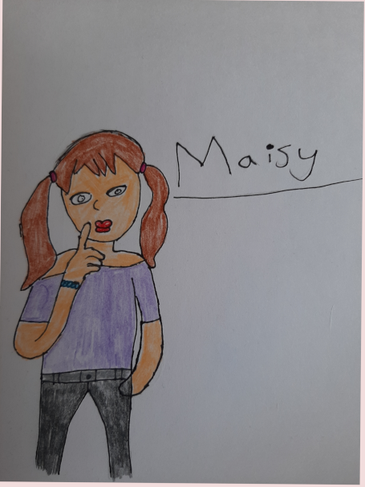
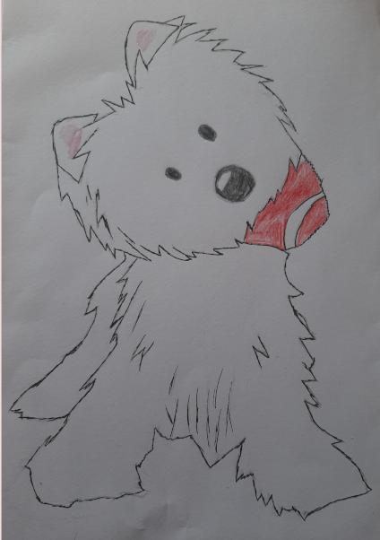
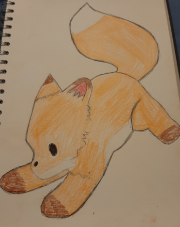
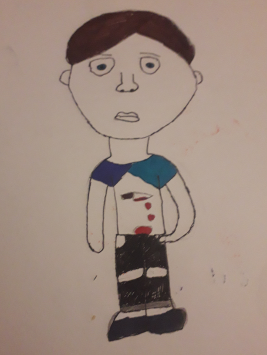
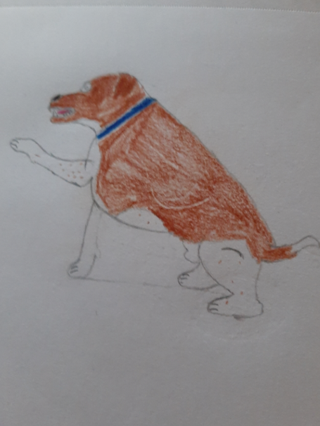
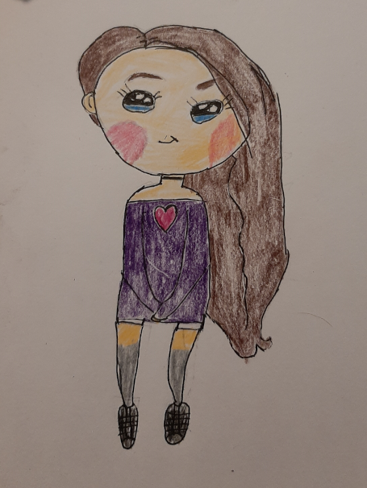

|

|
This is Maisy she is a non playerable charcater
|
|

|
-This is Cody The Westie, Who is not playable charcter.
-He can be seen around the enviroment and can help the players find serets and
speical items.
But beware he can sometimes lie about the whereabouts |
|

|
-This is Chipmunk the Fox, who is not a playable charcter.
-He can be seen around the eviorment and will help players navigate the story
based elements
So if the player sees him,and wants to do the story based elementsof the game they
should follow him.
|
|

|
-This is Ethan, He is not a playbale charcter.
-But can be seen roaming the forest surronding the house.
-Players better be aware of where he is as if he catchs sight of the player unless
they can run and hide
(unless if they play as Maisy and know the skill to seduce him),they will die.
|
|

|
-This is Flint the Plummer Terrier.
-He likes to dig and has tunnels around the forest.
-He will report back to Ethan if he spots you.
-The player might be able to find and use Flint's tunnels.
But be aware he could be using them as well.
-He can be heard by his panting, in the tunnels.
-Flint can get in the house and can be heard moving around on the wooden
flooring with his claws making a clicking sound.
-Ethan is sometimes known to get Flint to sniff out the player and pounce.
-Flint can be tricked in to coming part of the players side for some chicken
which the Player will find out in notes.(This means Flint can help avoid
Ethan and the Dolls and even Distarct Ethan away from the player)
-If the player learns the ability to trick Flint with Chicken,the player
will be able to get Flint to go into the tunnels and open doors or find things.
|
|

|
-This is a Doll that can be found aorund the world that are alive.
-They report back to Ethan of any advancments the player makes.
-They help Etahn set traps.
-They tend to stay out of sight of the player but can be heard
screeming when they run away to report.
-The player might be able to spot the shadow of them if they look
carefully.
|